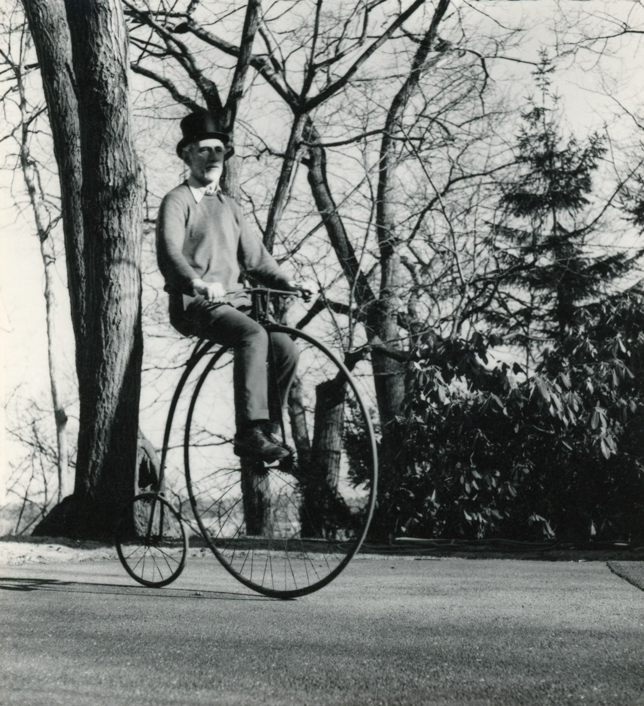
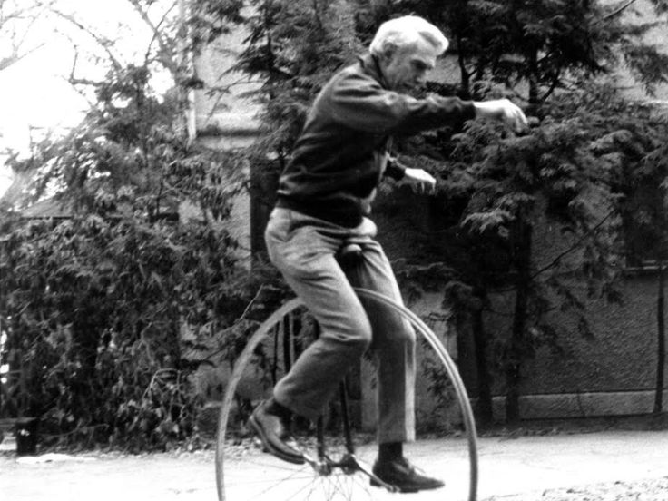
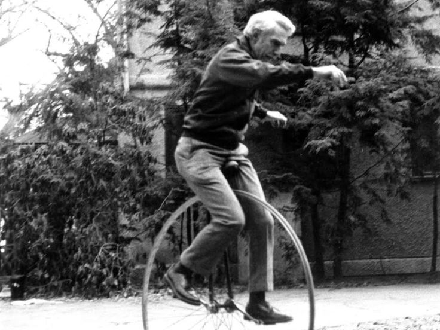
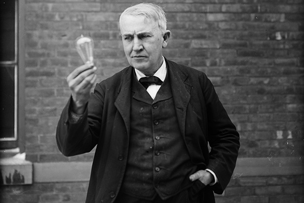
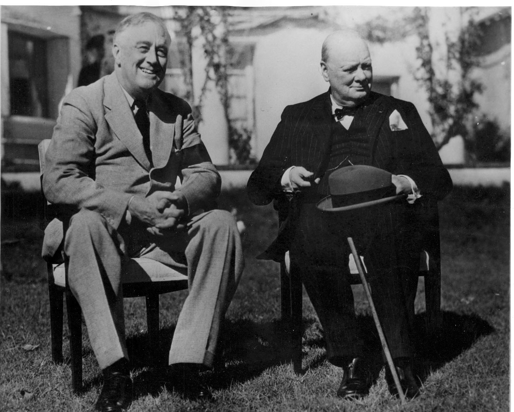
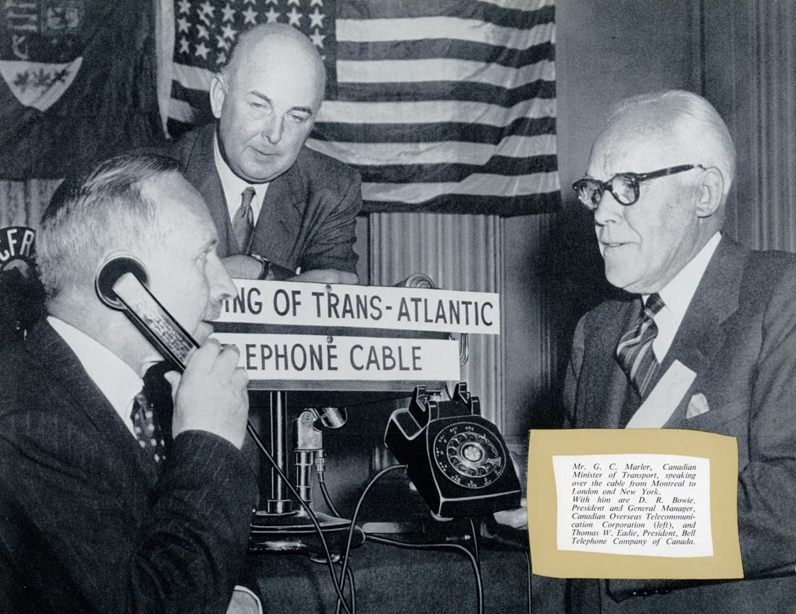
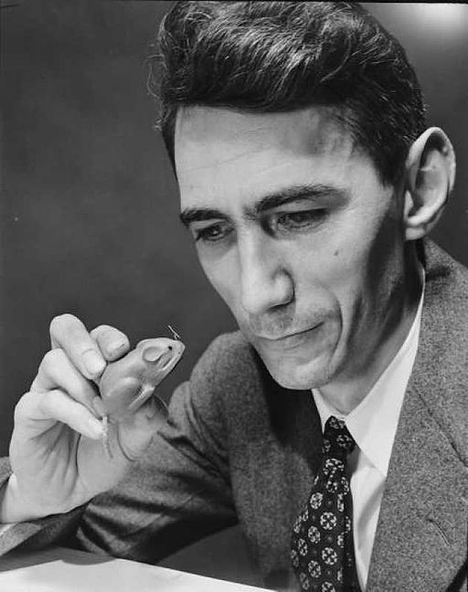
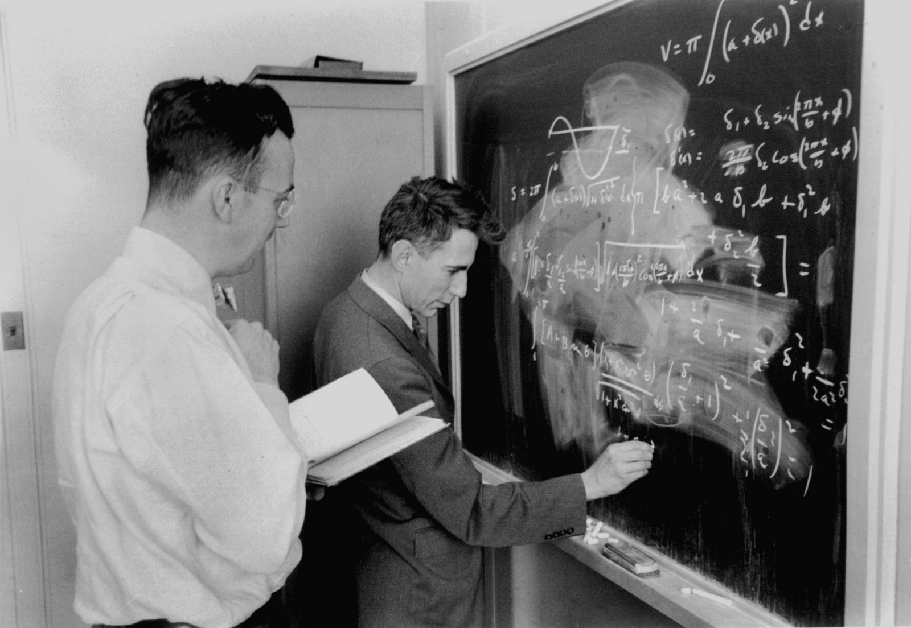

Claude Shannon
"I visualize a time when we will be to robots what dogs are to humans, and I'm rooting for the machines."
- Claude Shannon, The Mathematical Theory of Communication
5 Interesting Facts
1. He likes Unicycles

 

2. His hero was Thomas Edison & he later learned the pair were distant cousins

3. He worked on the top-secret transatlantic phone line connecting FDR and Winston Churchill during World War II


4. He built a maze-solving mouse as an early illustration of artificial intelligence.

5. Claude Shannon is known as a pioneer of the information age, ever since he demonstrated in his seminal paper “A Mathematical Theory of Communication” (1948) that information could be defined and measured as a scientific notion.
